← Qualification / Editable distance between attached components
Forge qualification case
PASSQ1 · Q2 · Q3 · Q4 · Q5 · Q6
Editable distance between attached components
Verify that distance along the attachment normal remains a native editable joint parameter.
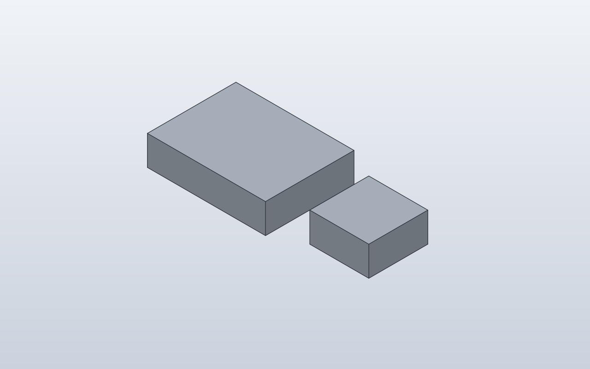
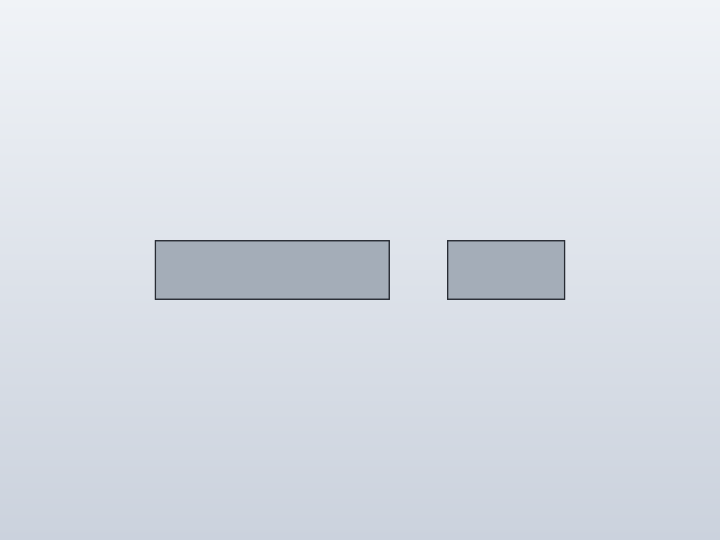
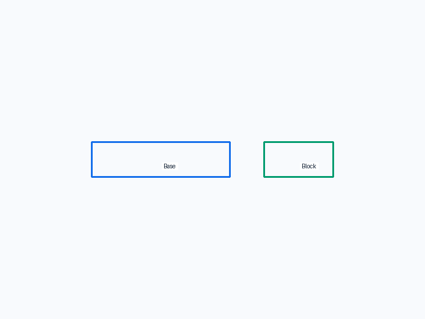
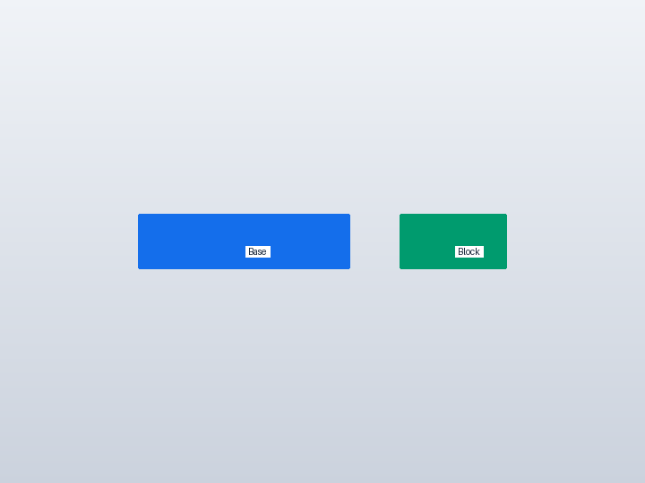
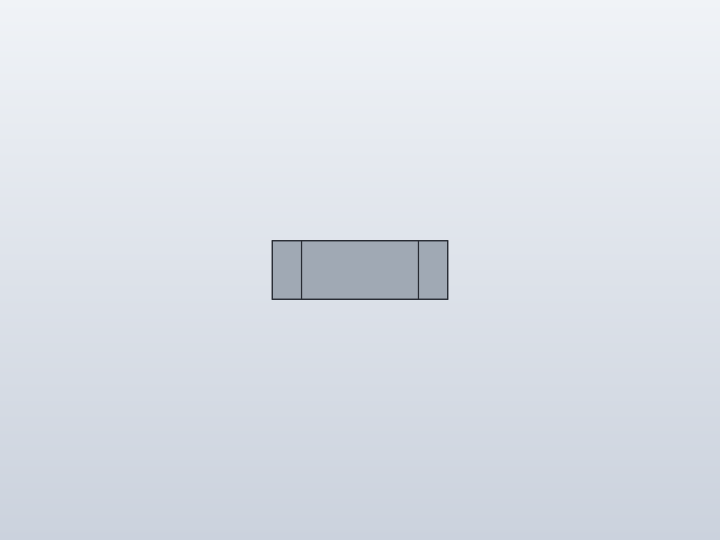
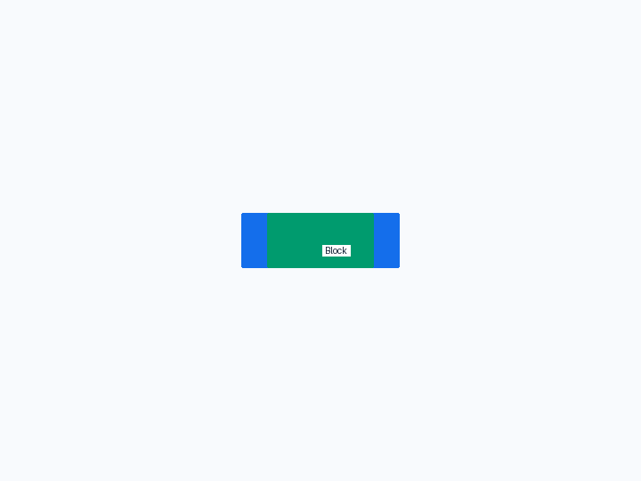
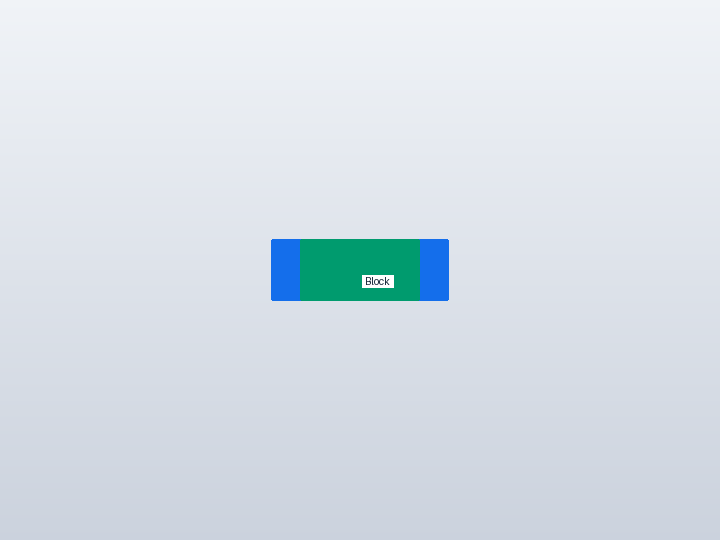
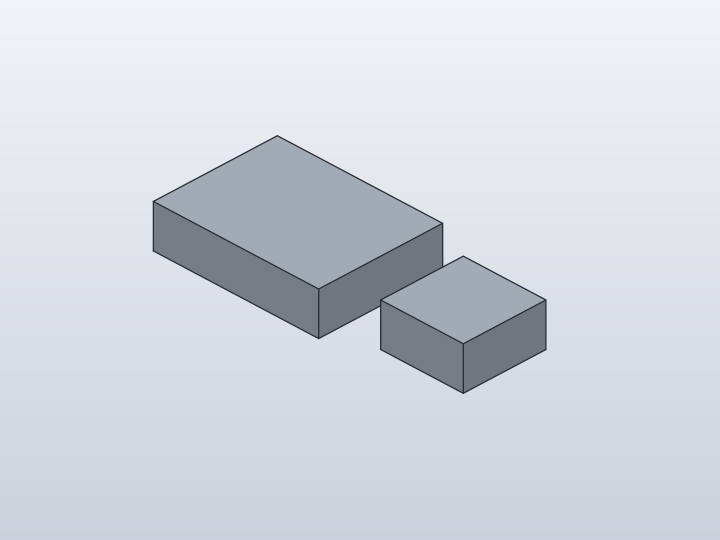
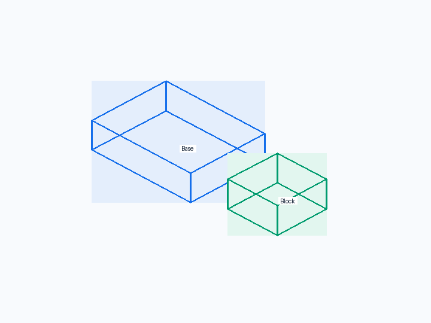
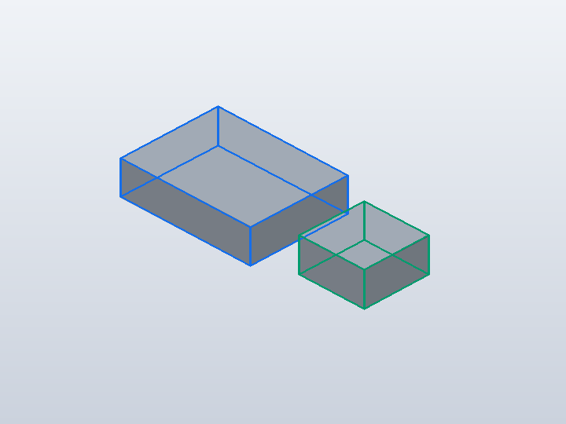
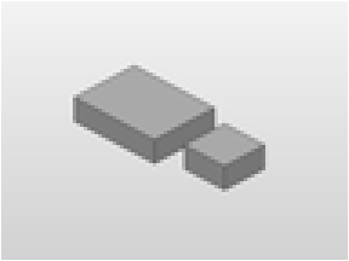
1. Forge contract
Public API
attach(..., gap=self.gap)
Internal Forge model
Rigid Attachment with a symbolic gap expression; anchor identities are unchanged.
SolidCraft lowering
joint.create(type='rigid', offset='gap'); gap is not flattened into occurrence.move.
2. Native verification
Expected result
The child sits 10 mm away from the parent's RIGHT face along the joint normal.
Parametric mutation
Change gap from 10 to 30 mm in the saved .sc design; the child must move another 20 mm without rerunning Python.
Evidence
- Fixture source
- Generated command JSON
- results.json
- measurements-gap-30.json
- measurements.json
- change-gap.json
- joint-inspect.json
- model-gap-30.sc
- model.sc
- model.step
- qualification-result.json
- validation.json
- visual-validation.json
- camera-front.json
- camera-iso.json
- camera-right.json
- Native snapshot: model.png
- Native snapshot: model-front.png
- Native snapshot: goal-front.png
- Native snapshot: overlay-front.png
- Native snapshot: visual-diff-front.png
- Native snapshot: model-right.png
- Native snapshot: goal-right.png
- Native snapshot: overlay-right.png
- Native snapshot: visual-diff-right.png
- Native snapshot: model-iso.png
- Native snapshot: goal-iso.png
- Native snapshot: overlay-iso.png
- Native snapshot: visual-diff-iso.png


3. Results
gap 30 · 2 bodies · measurements-gap-30.json
Parameters
| Name | Value |
|---|---|
gap | 30.0 |
Bodies
| Body | BBox min | BBox max |
|---|---|---|
| Base | [-20, -15, 0] | [20, 15, 10] |
| Block | [50, -10, -2.11283e-15] | [70, 10, 10] |
Baseline · 2 bodies · measurements.json
Parameters
| Name | Value |
|---|---|
gap | 10.0 |
Bodies
| Body | BBox min | BBox max |
|---|---|---|
| Base | [-20, -15, 0] | [20, 15, 10] |
| Block | [30, -10, -2.11283e-15] | [50, 10, 10] |
Semantic validation
| Status | Level | Check | Expected | Actual |
|---|---|---|---|---|
| PASS | Q4 | declared target geometry | [{"label": "Base", "min": [-20, -15, 0], "max": [20, 15, 10]}, {"label": "Block", "min": [30, -10, 0], "max": [50, 10, 10]}] | [{"min": [-20.0, -15.0, 0.0], "max": [20.0, 15.0, 10.0]}, {"min": [30.0, -10.0, -2.1128252188474783e-15], "max": [50.0, 10.000000000000002, 10.0]}] |
| PASS | Q4 | base bounds | null | null |
| PASS | Q4 | 10 mm gap | {"min": [30, -10, 0], "max": [50, 10, 10]} | {"max": [50.0, 10.000000000000002, 10.0], "min": [30.0, -10.0, -2.1128252188474783e-15]} |
| PASS | Q5 | declared mutation target geometry | [{"label": "Base", "min": [-20, -15, 0], "max": [20, 15, 10]}, {"label": "Block", "min": [50, -10, 0], "max": [70, 10, 10]}] | [{"min": [-20.0, -15.0, 0.0], "max": [20.0, 15.0, 10.0]}, {"min": [50.0, -10.0, -2.1128252188474783e-15], "max": [70.0, 10.000000000000002, 10.0]}] |
| PASS | Q5 | 30 mm gap mutation | {"min": [50, -10, 0], "max": [70, 10, 10]} | {"max": [70.0, 10.000000000000002, 10.0], "min": [50.0, -10.0, -2.1128252188474783e-15]} |
4. Generated native relationship/command path
[
{
"command": "joint.create",
"params": {
"type": "rigid",
"name": "Attach Block:1 to Base:1",
"a": {
"occurrence": "Base:1",
"face": [
20.0,
0.0,
5.0
]
},
"b": {
"occurrence": "Block:1",
"face": [
20.0,
0.0,
5.0
]
},
"offset": "gap"
}
}
]5. Reference models
These comparisons clarify concepts; Forge does not promise API compatibility with them.
- BOSL2: Conceptually similar to an attachment displacement along the local anchor normal rather than a world-axis translate.
6. Fixture source
class Base:
def build(self):
return Box(40, 30, 10)
class Block:
def build(self):
return Box(20, 20, 10)
class ParametricAttach:
gap = 10.0
def build(self):
base = Base()
block = Block().attach(
base,
parent=Anchor.RIGHT,
child=Anchor.LEFT,
gap=self.gap,
)
return base + block
ParametricAttach()